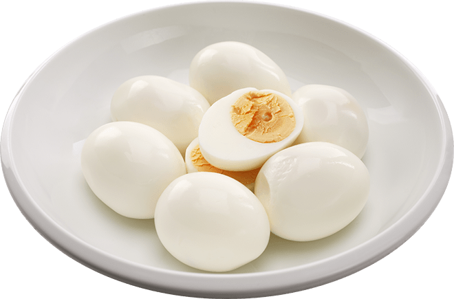

Boiled eggs

Delicious boiled eggs on a plate.
Boiled eggs are eggs, typically from a chicken, cooked with their shells unbroken, usually by immersion in boiling water. Hard-boiled eggs are cooked so that the egg white and egg yolk both solidify, while soft-boiled eggs may leave the yolk, and sometimes the white, at least partially liquid and raw. Boiled eggs are a popular breakfast food around the world.
Ingredients:
Steps:
- Put the eggs in a pod and cover them with room temperature water.
- Turn on the cooker.
- After the water starts to boil wait for 5 minutes if you want the egg to be liquid on the inside or 7 minutes if you prefer the inside to be hard.
- Take the eggs from the water and put them in cold water for 2-3 minutes to be easier to clean.
- Enjoy.
Back to Homepage